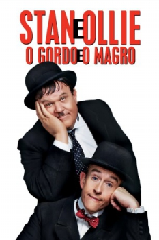

Stan & Ollie [Legendado] (2018)

![link to Stan & Ollie [Legendado] on TheMovieDb](../img/themoviedb.png)
The untold story of the world's greatest comedy act.

Avaliação (TMDb):


7.0/10 (741 votos)
Avaliação (Usuário):
País:United Kingdom, 98 minutos
Idiomas falados:Inglês
Gênero(s):Comédia, Drama
Diretor(s):Jon S. Baird
Codec:MPEG-2 (DVD)
Número: 4094
Sinopse:
Laurel & Hardy, os comediantes mais famosos do mundo, tentam reacender as suas carreiras cinematográficas mas embarcam no que se irá tornar o seu canto de cisne – uma exaustiva tournée teatral na Grã-Bretanha do pós-guerra.
Elenco:
Steve Coogan, John C. Reilly, Shirley Henderson, Nina Arianda, Rufus Jones, Danny Huston, Joseph Balderrama, John Henshaw, Keith MacPherson, Richard Cant
Tipo de mídia: DVD5,
Legendas: Inglês, Espanhol, Português,
Alugado: Não
Tela: 2.35:1